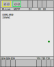

DXP2 and DXR2 MS/TP properties
The listed properties are displayed in the Hardware and network editor > Inspector window > Properties tab when the automation station is selected in the Device view tab.

General
Property text | Description | Default Value |
|---|---|---|
Name | Name is a text field to enter the name of the automation station. The name is displayed in the project tree. | Depends on other settings. |
Comment | Text field for any helpful information on the automation station. | - |
Order number | Device type. Read only | Depends on the device type. |
Rail | Rail where the automation station is located. Read only. | DXR rail_1 |
Automation station | Name of the automation station. Read only. | Depends on other settings. |
Power supply (KNX rail) | Power available on the KNX rail. The value is not updated. Read only. See also Power remaining in KNX rail properties Unit: [mA] | 50 |
Catalog information
Property | Description | Default value |
|---|---|---|
Short designation | Short description of the designation of the automation station. Read only. | Depends on the device type. |
Order number | Device type. Read only. | Depends on the device type. |
Version | Version of the offline engineered program for the automation station. Read only. | Depends on other settings. |
Application architecture | Version of the application architecture. Read only. | Depends on other settings. |
Description | Description of the automation station. Read only. | Depends on the device type. |
Application type information
The properties described in the table below are only supported in Desigo V6.0 and higher.
Property | Description | Default value |
|---|---|---|
Use this automation station to develop an application type | Use this automation station to develop an application type defines if the automation station can be used to create a project specific application type or not. Note
|
|
Application type information | ||
Application type | Application type is a text field to enter the name of the application type. | - |
Description | Description is a text field to enter a description of the application type. |
|
Owner | Text field to enter the name of the author or the origin of the application type e. g. headquarters, regional company, project. | - |
Version | Version is a field to enter the version of the application type. Format: mmm.rrr | - |
Dependency tags | Dependency tags is a text field to enter dependency tags that are specific for the type of the automations station. The dependency tags are used in the configurator of ABT Site to hide features that are not compatible with the automation station. | - |
Identifier | The identifier is a calculated value. Read only. | - |
Last compiled | Last compiled shows the timestamp of the last successful compilation of the application type. Read only. | Not compiled |
File name | File name shows the name of the file that is created when the application type is packed. Read only. | - |
Apogee integration | ||
Include Apogee application number | Defines if an application number can be specified and included in the application type.
|
|
Application number | Field to enter the Application number. Application number is only enabled if Include Apogee application number is enabled. | 0 |
 : Enables the data fields for application type information.
: Enables the data fields for application type information. : Disables the data fields for application type information.
: Disables the data fields for application type information.Unit conversion
The properties described in the table below are only supported in Desigo V6.0 and higher.
Property text | Description | Default value |
|---|---|---|
System of units | Shows the system of units used by the room automation station. Defined in the ABT project. Read only. | Depends on the region of the automation station. |
TX device types
Property | Description |
|---|---|
Apply parameters | Assigns signal parameters of hardwired I/Os of the automation station to all I/Os with the same field device type. Transfer I/O parameters |
BACnet MS/TP Interface
MS/TP settings
Property text | Description | Default value |
|---|---|---|
Baudrate | Baudrate defines the transmission rate. The baudrate needs to correspond to the baudrate set in ABT Site > Projects > Settings because only devices with the same baudrate can communicate with each other.
| The default value depends on ABT project settings. |
MAC address | MAC address defines the MAC address assigned to the automation station. The MAC address needs to be unique within the network.
|
|
Max. manager | Max. manager defines the highest value that can be assigned as MAC address. Range: |
|
Max info frames | Max info frames defines the number of frames the automation station sends if it receives a token. Range: |
|
 Auto: The baudrate of the network is used.
Auto: The baudrate of the network is used. 1...127
1...127BACnet settings
Property text | Description | Default value |
|---|---|---|
Device name | Name is a text field to enter the name of the automation station. The name is displayed in the project tree. | The default value depends on ABT project settings. |
Device instance number | Device instance number is assigned automatically but can be changed manually. It has to be unique within the network. Note: If you change the value manually, there is no check if the number is already used or will be used by automatic assigning within a range. | The default value depends on ABT project settings. |
Serial number | The device serial number that is associated with the BA Device object. Serial number is assigned during installation and commissioning. | ∼ |
UDP port [Hex] | UPD port [Hex] defines the UDP port used for communication in the hexadecimal format. Use the UDP port specified in ABT Site > Projects > Settings. Only devices with the same UDP port can communicate.
|
|
APDU retries | APDU retries defines how many times the automation station tries to send an APDU. Range: 0...10 | 3 |
APDU timeout [mm:ss:ms] | APDU timeout [mm:ss:ms] defines the time before the automation station will resend an APDU if the APDU is not acknowledged by the receiver. Range: 00:01:000...00:12:000 [min:ss:ms] | 00:03:000 (IP) |
Max APDU length | Max APDU length defines the maximum length of the APDU.
|
|
Time zone | Defines the time zone assigned to the BACnet device. This value can be changed by using the drop-down menu of time zone choices. Setting the time zone for automation stations |
|
Network number | Network number defines the network the automation station belongs to. The network number needs to correspond to the network number in ABT Site > Projects > Settings. Range: 1...65534 7000: Communication is set to local. The automation station cannot communicate over the network. | 1 |
Description | Text field to enter a description of the network. |
|